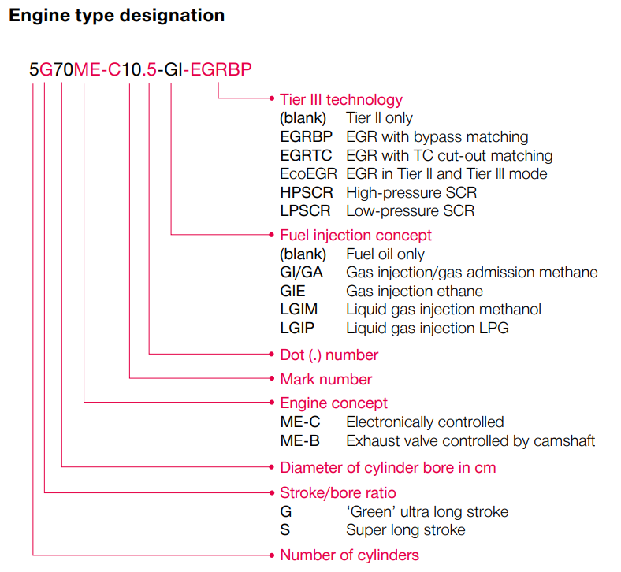
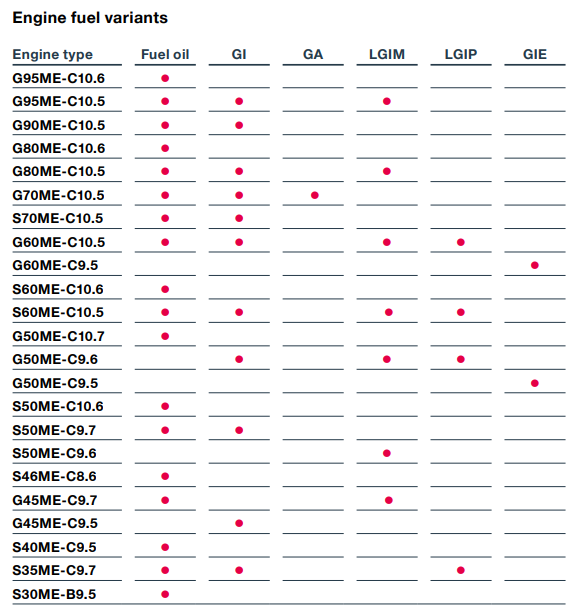
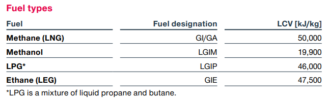
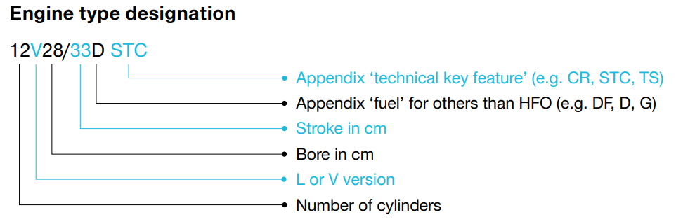

在當前全球航運業面臨脫碳化與法規日益嚴苛的轉型期，MAN Energy Solutions (2025年中已改名為 Everllence) 作為全球領先的船用動力供應商，其產品組合的演進反映了海洋工程技術的最前沿發展。本報告針對 MAN B&W 二行程推進發動機（Two-stroke propulsion engines）與 MAN 四行程船用發電機組（Four-stroke marine GenSets）兩大技術核心，進行深入的技術架構分析、型號命名規則邏輯解析、燃料變體技術特徵研究，以及針對各類機型之氣缸數量配置進行詳盡彙整。
一、二行程推進發動機技術體系：低速柴油機之電子控制與燃料彈性
二行程低速柴油機憑藉其卓越的熱效率與巨大的轉矩輸出，始終是大型遠洋船舶（如超大型集裝箱船、油輪與散裝貨船）的核心推進動力。MAN B&W 技術體系在過去二十年間完成了從機械控制（MC 系列）到全面電子控制（ME 系列）的典範轉移。
1.1 二行程發動機型號命名規則（Engine Type Designation）之邏輯分析
發動機型號的命名不僅是市場標籤，更是一套標準化的工程語言。以典型型號 5G70ME-C10.5-GI-EGRBP 為例，每一組字符均精確描述了發動機的物理特性、控制邏輯與環保技術配套。

首位數字代表發動機的氣缸數量（Number of Cylinders），這直接決定了發動機的總輸出功率。隨後的字母表示衝程與缸徑之比（Stroke/Bore ratio），主要分為四類：G（Green，超長衝程）、S（Super long stroke，極長衝程）、L（Long stroke，長衝程）與 K（Short stroke，短衝程）。G 系列發動機的引入旨在實現極低的發動機轉速，以便匹配直徑更大、流體動力效率更高的螺旋槳，進而實現高達 7% 的二氧化碳減排效果。
中間的兩位數字表示氣缸缸徑（Cylinder Bore），以公分為單位。例如 70 代表 700 mm 的缸徑。隨後的 ME 標誌代表發動機屬於電子控制（Electronically controlled）家族，具體細分為 ME-C（緊湊型）與 ME-B（混合控制型）。
ME-C 與 ME-B 差異：
- ME-C 發動機完全取消了傳統的凸輪軸，通過高壓液壓系統控制燃油噴射定時、排氣閥動作、起動閥啟閉以及氣缸潤滑，提供了極大的操作靈活性。
- ME-B 發動機則採用電子控制的燃油噴射增壓器，但排氣閥仍由機械凸輪軸驅動，僅排氣閥關閉定時具備電子變量控制功能。
型號中的點號數字（Dot number，如 10.5 或 10.6）代表設計版本與技術迭代版本。後綴的燃料概念標誌（如 GI, GA, LGIM 等）描述了其雙燃料噴射系統，而最後的環保技術標誌（如 EGRBP, EGRTC, HPSCR）則指明了其符合 IMO Tier III 排放標準所採用的具體技術方案。
二、二行程燃料變體（Engine Fuel Variants）之技術特徵與熱化學基礎
MAN B&W 透過多元燃料噴射系統，使其發動機具備了適應多種燃料的能力，從傳統的船用重油（HFO）與柴油（MDO）擴展至液化天然氣（LNG）、甲醇、液化石油氣（LPG）與乙烷。

2.1 甲烷（Methane/LNG）燃料技術路徑
甲烷（Methane/LNG）作為當前最成熟的替代燃料，MAN 提供了兩套技術路徑：GI（Gas Injection）與 GA（Gas Admission）。
GI vs. GA 技術比較：
- GI 發動機採用柴油循環（Diesel Cycle），在壓縮衝程末端以約 300 bar 的高壓噴射甲烷，這種方式能保持極高的效率並抑制甲烷滑移（Methane Slip）至最低限度。
- GA 發動機採用奧圖循環（Otto Cycle），在壓縮衝程初期引入低壓甲烷，雖然這對供氣系統（FGSS）的壓力要求較低，但對燃燒爆震（Knocking）的控制更為敏感。
2.2 液態燃料變體
LGIM（Liquid Gas Injection Methanol）發動機是針對甲醇設計的先鋒技術。甲醇在常溫下為液體，便於存儲與運輸，雖然其低位發熱量（LCV）僅為 19,900 kJ/kg，遠低於燃油的 42,700 kJ/kg，但透過專用的噴射器設計，LGIM 發動機能夠在不損失功率的前提下實現平穩燃燒。
LGIP（Liquid Gas Injection LPG）則專為液化石油氣設計，其 LCV 為 46,000 kJ/kg，非常適合 LPG 運輸船利用其貨物進行推進。

三、發動機優化調校與排放控制技術
為了符合 EEDI（能源效率設計指數）並減少 SFOC（特定燃油消耗），MAN 二行程發動機提供了多種調校選項。高負載優化（High-load optimization）適用於全速運行的工況，而針對日益頻繁的減速航行（Slow Steaming），則提供了 EGB（Exhaust Gas Bypass，排氣旁通）、EPT（Engine Process Tuning，發動機過程調校）以及 SEQ（Sequential Tuning，連續調校）等方案。
3.1 EGR 廢氣再循環系統
在排放控制方面，針對 IMO Tier III 氮氧化物限制，發動機可整合 EGR（廢氣再循環）或 SCR（選擇性催化還原）技術。
EGR 系統透過將部分排氣冷卻並引回氣缸，有效降低燃燒溫度以抑制 NOx 的生成。根據發動機規模，EGR 系統分為適用於大缸徑機型的 EGRTC 與適用於中小缸徑機型的 EGRBP。
3.2 SCR 選擇性催化還原系統
SCR 系統利用還原劑（尿素）在催化劑作用下將 NOx 轉化為無害的氮氣與水蒸氣，分為高壓（HPSCR，裝於增壓器上游）與低壓（LPSCR，裝於增壓器下游）兩種布置方式。
| 排放控制技術 | 適用範圍 | 工作原理 |
|---|---|---|
| EGRTC | 大缸徑二行程機型 | 廢氣冷卻再循環，降低燃燒峰值溫度 |
| EGRBP | 中小缸徑二行程機型 | 旁通式廢氣再循環 |
| HPSCR | 安裝於增壓器上游 | 尿素催化還原 NOx（高壓側） |
| LPSCR | 安裝於增壓器下游 | 尿素催化還原 NOx（低壓側） |
四、MAN 四行程船用發電機組 (GenSet)：電力管理之技術基石
四行程發電機組是船舶電力系統（Ship Service Power）與柴電推進系統（Electric Propulsion）的核心。與二行程機相比，四行程 GenSet 具備更高的轉速與更緊湊的結構，能適應複雜的負載變動。
4.1 四行程發動機型號命名與技術範疇
四行程發動機的命名規則強調氣缸排列、缸徑衝程與關鍵技術。以 6L32/44CR 為例，"6" 代表氣缸數，"L" 代表直列（In-line）排列（V 代表 V 型排列），"32/44" 分別代表 320 mm 缸徑與 440 mm 衝程，而 "CR" 則標誌著該機型採用了高壓共軌（Common Rail）噴射系統。

針對 GenSet 應用，MAN 的產品組合從缸徑 16 cm 的小型高速機一直延伸到缸徑 51 cm 的大型中速機。這些發動機能夠燃燒從 MGO、MDO 到 HFO 的各種燃料，並透過 DF（Dual Fuel）版本支持甲烷運行。
4.2 四行程 GenSet 之技術優勢與應用分析
在大型電力需求場景下，L51/60DF 是當前技術的旗艦，其單缸功率與熱效率在同類機型中保持領先。透過採用雙燃料技術，發動機能夠在燃氣模式下直接滿足 IMO Tier III 的 NOx 限制，且無排放硫氧化物（SOx）與顆粒物（PM）之虞。新一代的 L49/60DF 則針對現代船舶的電力推進需求進行了優化，特別強化了發動機在高載荷波動下的動態響應能力。
中速機組如 L32/44CR 體現了高壓共軌技術的優勢。透過電子控制的噴射壓力和正時，CR 發動機能夠在部分負載（Part-load）情況下依然維持極低的油耗與煙度排放。這對於經常需要在港口低載荷運行的發電機組而言，具備極高的經濟性與合規優勢。
175D 系列 — 高速大功率 V 型發動機：
針對高速與大功率重量比的需求，175D 系列採用了先進的模組化設計。作為 12V、16V 或 20V 排列的 V 型發動機，175D 不僅在傳統的輔助發電領域表現出色，更被廣泛應用於電力推進船舶，提供極高的機動性與冗餘度。其採用的噴射系統與渦輪增壓配置，使其能在數秒內從空載攀升至滿載，確保了船舶電力系統的穩定性。
五、全球環保規制下的技術整合與排放動態
隨著國際海事組織（IMO）與區域性法規（如歐盟的 FuelEU Maritime）對溫室氣體排放的限制日益嚴格，MAN 的發動機平台已從單純的機械系統演變為高度整合的綠色動力模組。
5.1 甲烷滑移控制與碳足跡優化
對於甲烷燃料（LNG）發動機，甲烷滑移（未燃甲烷的排放）因其極高的全球變暖潛力（GWP）而受到高度關注。MAN 的 ME-GI 發動機已能將甲烷滑移量控制至極低水平。這一技術成就主要源於高壓噴射技術的應用，確保燃料在活塞上死點附近完成接近完全的擴散燃燒，而非傳統低壓噴射所面臨的火焰淬熄問題。
5.2 氣缸潤滑系統之進化：Alpha ACC 技術
發動機的可靠性在很大程度上取決於氣缸潤滑。MAN 二行程發動機採用的 Alpha ACC（Adaptive Cylinder oil Control）系統，能根據發動機負載與燃料中的硫含量自動調整潤滑油的噴射量。當使用低硫燃料或替代燃料（如 LNG、甲醇）時，系統會自動降至最低供給率，從而節省昂貴的潤滑油成本並減少排氣中的灰分。
六、結論：未來海洋動力之戰略布局
MAN Energy Solutions 的發動機計劃展現了一個極具彈性的技術平台。透過對二行程推進發動機與四行程發電機組在型號、氣缸配置與燃料變體上的精細化管理，船舶設計者與船東能夠根據不同的船舶類型（從超大型集裝箱船到小型近海支持船）以及預期的航路燃料供應狀況，制定最優化的配置方案。
未來，隨著氨（Ammonia）與氫等零碳燃料技術的成熟，目前的 ME-C 與 GenSet 平台將具備極強的升級與改裝潛力（Retrofit capability），這確保了現有投資在長達二十至三十年的船舶壽命週期內，始終能與全球碳中和軌跡保持同步。二行程發動機對超長衝程與多燃料技術的追求，以及四行程機組對高壓共軌與雙燃料彈性的強化，共同構建了現代綠色航運的技術基石。